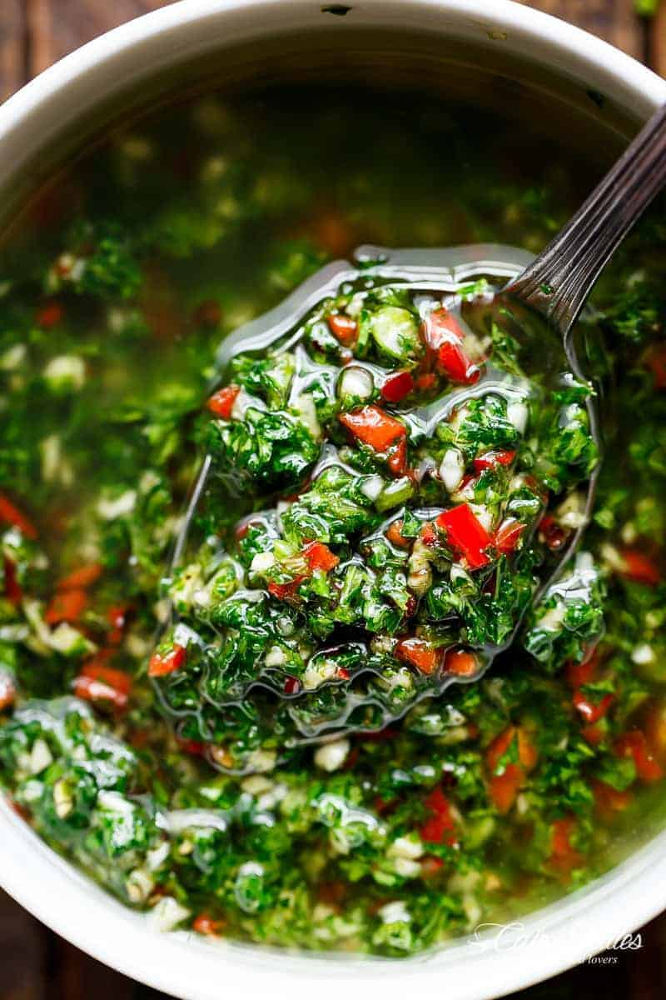

Chimichurri
Home

Description
Authentic Chimichurri is a traditional recipe from Uruguay & Argentina, where it’s a staple accompaniment to grilled meats, especially churrasco (grilled beef) at any asado (barbecue). Chimichurri is a vibrant, tangy, and herbaceous oil-based condiment that brings a burst of fresh flavors to any dish. The dominant notes come from fresh parsley, garlic, and oregano, giving it a bright and aromatic quality.
Ingredients
- 1/2 cup olive oil
- 2 tablespoons red wine vinegar
- 1/2 cup parsley (finely chopped)
- 3-4 cloves garlic (finely chopped or minced)
- 2 red chilies small, or 1 red chili, deseeded and finely chopped (about 1 tablespoon finely chopped chili)
- 3/4 teaspoon dried oregano
- 1 teaspoon coarse salt
- 1/2 teaspoon pepper
Steps
- Mix all ingredients together in a bowl. Allow to sit for 5-10 minutes to release all of the flavours into the oil before using. Ideally, let it sit for more than 2 hours, if time allows.
- Chimichurri can be prepared earlier than needed, and refrigerated for 24 hours, if needed.
- Use to baste meats (chicken or steaks) while grilling or barbecuing. We don’t use it as a marinade, but choose to baste our meats with chimichurri instead. However, you can use it as a marinade if you wish. Also, add a couple of tablespoons over your steak to serve.
Note: Adjust the chimichurri to suit your tastebuds with more or less chili, salt and pepper!